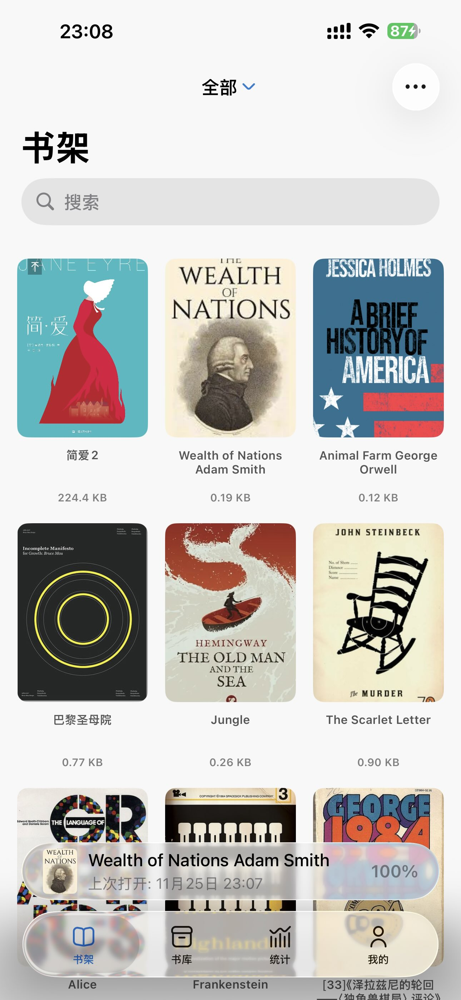

Readingo 对比横评：在阅读器红海站稳脚跟的那几个细节
阅读器赛道从来不缺选手，从老牌静读、多看、微信读书到开源的 KOReader、FBReader，每一款都有各自的拥趸。Readingo 凭什么能在这条红海里占住一席之地？本文从定位、差异化到取舍逐层拆解。
阅读器赛道里，Readingo 排在什么位置
先把这个赛道的格局拉出来看一眼——国内用户能接触到的阅读器，大致可以分成四档：老牌付费（静读天下、多看，积累了十年以上的口碑）、平台绑定（微信读书、豆瓣阅读，靠社交和正版内容生态）、开源硬核（KOReader、FBReader，主打自定义和折腾），以及 Readingo 所在的「跨平台本地派」。
这一档的核心诉求很明确：不想被任何大厂绑定，又想要像付费阅读器那样的打磨度。既不满足于微信读书的格式限制和社交噪音，也不想像 KOReader 那样花几个小时调主题和插件。Readingo官网 就是在这个夹缝里生长起来的——跨 iOS 和 Android，纯本地离线，靠一堆看似不起眼的小功能攒出了口碑，安装包从官方下载拿就行。
它的差异化：三个别家没认真做过的点
WiFi 远程传书——这件事它做到了开箱即用
数据线传书在今天看起来像是上个世纪的操作，但手机厂商对文件系统的限制越来越严，真正好用的无线传书方案反而不多。KOReader 也有过 WiFi 上传功能，但配置繁琐、界面粗糙，更像个给极客准备的彩蛋。
Readingo 把这件事做成了完整的产品功能：书架里点一下就能开启，屏幕显示局域网 URL，电脑浏览器访问直接打开一个拖拽上传界面——拖进去就完事，批量上传、管理已导入的书，全在浏览器里解决。而且局域网多设备之间也能互传，iPad 和 Android 手机不用经过电脑中转就能直接交换文件。
这件事的价值被低估了。对于学生党和经常需要换书的人来说，找一根合适的数据线、装驱动、等手机助手响应——这个流程的摩擦成本远高于连同一个 WiFi、拖一下文件。Readingo 把这件事的摩擦降到了零。
自动阅读——不是只有翻页，是「像人在读」
大多数阅读器的「自动翻页」功能，本质上就是每隔 N 秒翻一页的定时器。Readingo 把这个功能做深了：翻页速度可以精确到秒，支持快速（3-5 秒）、正常（6-10 秒）、慢速（10-15 秒）三档预设，也可以完全自定义。而且自动阅读运行中你手动翻一页，它的节奏会跟着调整——不会像个死板的机器一样继续按原节奏翻下去。
更妙的是它和沉浸式全屏、各种阅读模式（滑动翻页、仿真翻页、滚动阅读）都能配合，进度自动保存，中途想划线或加笔记只需点一下屏幕暂停，操作完继续就行。
这个功能和 TTS 听书是互补关系：开车的时候听书，睡前开自动阅读盯着看——不想费耳朵也不想手动翻页的时候，它就是最舒服的选择。很多同类工具要么只有 TTS，要么自动翻页做得非常粗糙，Readingo 在这个细分场景上的打磨度确实高一层。
存储空间管理——书库大了才知道有用
电子书单个文件不大，但攒起来真的不少。加上笔记、主题文件、封面图，Readingo 的数据量可能悄无声息地占掉几个 GB。
v1.28 新增的存储空间管理功能解决了这个问题：按分类查看占用、单本大小一目了然、网格视图下每本书直接显示文件大小——一眼就能看出哪些 PDF 特别大、哪些压缩包其实没占空间。清理也很方便：批量删除读完的书、清缓存、释放空间，全在一个入口完成，更细的版本迭代记录可以去Readingo文档翻一下。
这件事看似小众，但对书库超过 200 本的用户来说是刚需。我自己手机上有 300 多本书，之前总觉得存储空间莫名其妙就满了，Readingo 这个功能让我第一次搞清楚了每本书到底占多少、哪些可以删。

它的取舍：为了这些优势放弃了什么
Readingo 有个很明确的产品理念——纯离线，不做在线连接。这意味着它不会直接集成任何云盘 API，导入文件全靠系统文件管理器或云盘 App 的「用其他应用打开」桥接。对 iOS 用户来说有 iCloud Drive 还算顺滑，但 Android 用户就得绕一下：先从云盘下载到本地，或者长按文件选「用 Readingo 打开」。
这个设计是把双刃剑。好处是隐私有保障——没有任何文件经过 Readingo 的服务器，也不会偷偷上传你的阅读数据。但坏处也很直接：不像某些阅读器那样可以直接从书源在线下载、不用自己找书。对于习惯了微信读书那种「搜一下就能读」的用户来说，这个门槛确实高了一截。
另外，跨平台意味着每个平台的功能不一定完全同步。iCloud 同步只在 iOS 端完整可用，Android 上要想跨设备同步书架数据，还是得靠手动备份还原或者局域网互传。v1.4 之后加入了 iCloud 导入（和 iCloud 同步是两回事——前者是拉取云端已有文件，后者是双向同步书架数据），但 Android 端始终没有对等的云同步方案。
选购结论：它适合谁，又不适合谁
Readingo 的核心用户画像其实很清晰：重视本地离线的跨平台阅读党。如果你同时用 iPhone 和 Android 手机、不想被任何大厂生态绑定、愿意自己找书但希望阅读体验足够顺滑——它就是你在阅读器红海里最值得试的那一个。
反过来，如果你重度依赖微信读书的社交和正版生态、需要 Kindle DRM 格式支持、或者只读单一平台从不换设备——Readingo 的优势对你来说基本不存在，反而会觉得它的「纯离线」理念是个麻烦。
最后给一句明确的推荐：如果你已经在阅读器坑里试了三款以上还没找到满意的，试 Readingo——大概率不会让你失望。它不会成为你的唯一阅读器，但很可能会成为你最常用的那一个。
这份资料我顺手同步到了三个仓库，GitHub 主仓库维护、Gitee 放了一份便于国内用户访问、GitCode 也有镜像备份，地址分别是 GitHub、Gitee、GitCode，随缘哪个能打开就用哪个。